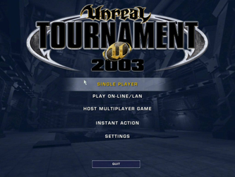
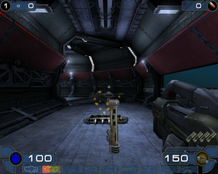
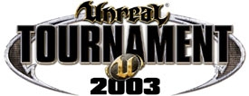

UT2003
Archivierte Anleitung
Dieser Artikel wurde archiviert, da er - oder Teile daraus - nur noch unter einer älteren Ubuntu-Version nutzbar ist. Diese Anleitung wird vom Wiki-Team weder auf Richtigkeit überprüft noch anderweitig gepflegt. Zusätzlich wurde der Artikel für weitere Änderungen gesperrt.
Zum Verständnis dieses Artikels sind folgende Seiten hilfreich:
Unreal Tournament 2003 ist der zweite Teil der Unreal Tournament-Reihe und wurde von Epic Games  in Zusammenarbeit mit Digital Extremes entwickelt. Die deutsche Spielversion wurde ursprünglich zensiert und mit FSK 16 frei gegeben. Es wurde nachträglich indiziert, da durch einen Uncut Patch die Gewaltdarstellung des Spiels wiederhergestellt werden konnte.
in Zusammenarbeit mit Digital Extremes entwickelt. Die deutsche Spielversion wurde ursprünglich zensiert und mit FSK 16 frei gegeben. Es wurde nachträglich indiziert, da durch einen Uncut Patch die Gewaltdarstellung des Spiels wiederhergestellt werden konnte.
Die Neuerungen gegenüber dem ersten Teil:
Die zweite Generation der Unreal Engine kam erstmals zum Einsatz
Der neue Spielmodus Bombing Run wurde eingeführt, der aus dem ersten Teil bekannte Assault Modus wurde jedoch gestrichen
Der Spielmodus Domination wurde durch Double-Domination ersetzt
Ein erweitertes Movement ermöglichte unter anderem Wall-Jumps, Double Jump etc.
Mit Hilfe von Adrenalin kann der Spieler kurze Zeit besonders stark werden
|  |  |
| Hauptmenü | Spielszene |
Installation¶
Zur Installation wird die Routine über linux-installer.sh eingeleitet [1] [2]:
/media/UT2003_CD3/linux_installer.sh #Der Pfad zum Laufwerk kann variieren
Sollte die Installation nicht starten hilft folgender Workaround:
export _POSIX2_VERSION=199209
Hinweis:
Der Loki Installer befindet sich auf CD3.
Anschließend kann es über ut2003 gestartet werden [3]. Auf Wunsch einen Menüeintrag [4] erstellen.
64bit¶
Um das Spiel auf einem 64bit-System zu installieren geht man wie folgt vor [1]:
sh /media/UT2003_CD3/linux_installer.sh --target ~/Desktop/2003 #Der Pfad zum Laufwerk kann variieren
In den Ordner setup.data/bin/Linux wechseln und eine symbolische Verknüpfung anlegen, da sich in dem darunterliegenden Ornder x86 die benötigte glibc befindet. Auf einem 64bit-System wird diese jedoch unter x86_64 gesucht:
ln -s x86 x86_64
Nachdem die Verknüpfung angelegt wurde kann die Installation über setup.sh aus dem Ordner ~/Desktop/2003 eingeleitet werden.
Patch¶
Um Online spielen zu können, sollte nach der Installation ein Update durchgeführt werden. Den benötigten Patch kann man von liflg.org  , beyondunreal.com oder holarse-linuxgaming.de herunterladen. Dieser ist ebenfalls notwendig um Bonus-Packs verwenden zu können.
, beyondunreal.com oder holarse-linuxgaming.de herunterladen. Dieser ist ebenfalls notwendig um Bonus-Packs verwenden zu können.
Den Patch findet man als gepacktes Archiv oder als Linux-Installer-Datei vor. Das Archiv entpacken [6] und die enthaltenen Dateien in das Installationsverzeichnis kopieren. Um den Inhalt der Linux-Installer-Datei zu entpacken verwendet man den folgenden Befehl [1]:
ut2003_VERSION-multilanguage.update.run --target ~/Desktop/Patch
Bonus Packs¶
Für Unreal Tournament 2003 wurden einige Bonus Packs veröffentlicht. Sie beinhalten neue Maps, neue Spiel-Modi und viele weitere Features. Nach dem Herunterladen der Dateien müssen diese im Installationsverzeichnis entpackt [6] werden.
| Bonus Packs | |||
| Link | Beschreibung | ||
| beyondunreal.com | Digital Extremes Bonus Pack | ||
| icculus.org | Digital Extremes Bonus Pack, Epic Bonus Pack One und Community Bonus Pack | ||
| holarse-linuxgaming.de | Digital Extremes Bonus Pack, Epic Bonus Pack One und Community Bonus Pack | ||
Konfiguration¶
ut2003.ini¶
Die Datei ut2003.ini im Verzeichnis ~/.ut2003/System kann mit einem Editor [4] bearbeitet werden.
| ut2003.ini | |||
| Abschnitt | Default | Änderung | Beschreibung |
[Engine.Engine] | language=deu oder Language=ute | language=int | Sprache auf Englisch umstellen. |
[Engine.GameEngine] | CacheSizeMegs=32 | CacheSizeMegs=64 | Zur Verfügung stehender RAM. |
Problemlösungen¶
Installation¶
Bei einigen Versionen von UT2003 sind die CDs falsch beschriftet. Wenn nach einer bestimmten CD gefragt wird und diese nicht angenommen wird, dann sollte folgende Reihenfolge ausprobiert werden:
Disc 3 entspricht Nr. 1
Disc 1 entspricht Nr. 2
Disc 2 entspricht Nr. 3
CD-Key¶
Falls bei der Installation das Problem auftreten sollte, dass der Schlüssel nicht angenommen wird, mit der Fehlermeldung
Please enter your CD key: <key here> Please reenter your CD key: <key here> [: <key here>: unexpected operator [: <key here>: unexpected operator Your CD key entries don't match. Try again.
dann sollte man zuerst die Abfrage nach dem Schlüssel einfach mit Strg + C abbrechen. Anschließend wechselt man in einem Terminal [1] in das Verzeichnis ut2003/System und bindet dort den Schlüssel per Hand in die dafür vorgesehene Datei ein:
echo "XXXXX-XXXXX-XXXXX-XXXXX" | sudo tee cdkey
Negative delta time!¶
 mit
mit 
Infobox¶
| Unreal Tournament 2003 | |
| Genre: | Ego-Shooter |
| Sprache: |  |
| Veröffentlichung: | 2002 |
| Publisher: | Atari |
| Systemvoraussetzungen: | Intel PIII oder AMD Athlon >= 733 MHz / 128 MB RAM / 3 GB freier Festplattenspeicher / CDROM / Grafikkarte >= 16MB RAM |
| Medien: | CD (3) |
| Strichcode / EAN / GTIN: | 4012160343022 |
| Läuft mit: | Loki |



- Erstellt mit Inyoka
-
 2004 – 2017 ubuntuusers.de • Einige Rechte vorbehalten
2004 – 2017 ubuntuusers.de • Einige Rechte vorbehalten
Lizenz • Kontakt • Datenschutz • Impressum • Serverstatus -
Serverhousing gespendet von